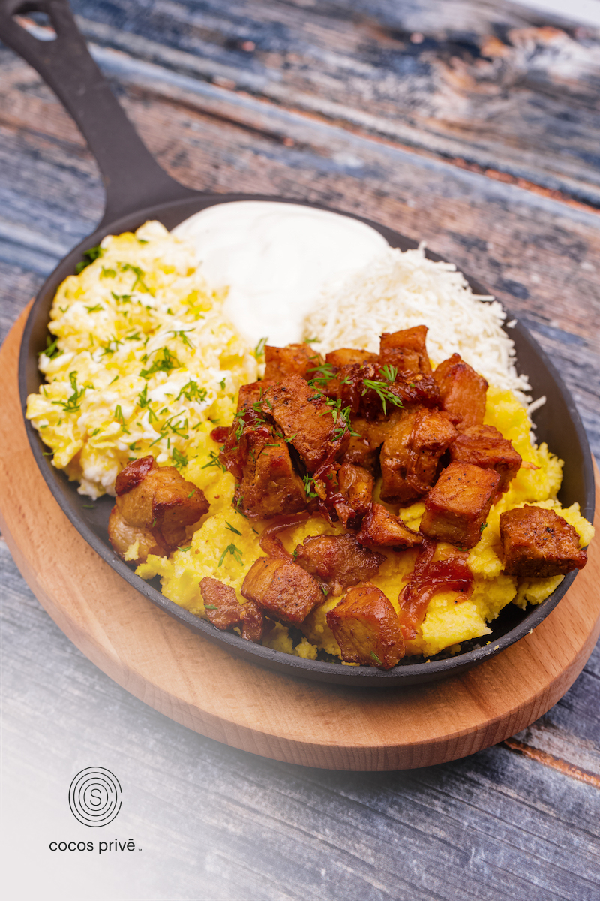

Mamaliga Recipe

Description
Mămăligă is a polenta made out of yellow maize flour, traditional in Romania, Moldova, Hungary, Western Ukraine and among Poles in Ukraine,
the Black Sea regions of Georgia and Turkey, and Thessaly and Phthiotis, as well as in Bulgaria (kacamak) and in Greece. It is traditional also in Italy, Switzerland,
Slovenia, Croatia, Brazil, with the name polenta.
Historically a peasant food, it was often used as a substitute for bread or even as a staple food in the poor rural areas. However, in the last decades it
has emerged as an upscale dish available in the finest restaurants.
- 3 cups water
- 1 teaspoon salt
- 2 tablespoons butter
- 1-2/3 cups yellow cornmeal meadium grind
- Freshly crack black pepper to taste
- Butter and sour cream (or yogurt, to feel more virtuous) for serving
- Bring water to boil in a medium saucepan. Add salt and butter.
- Begin stirring the water in one direction, sprinkling about 1/3 cup of the cornmeal into the depression that forms in the center. Once the water returns to the boil, pour in the rest of the cornmeal, stirring continuously to prevent clumps from forming.
Turn heat to low and continue stirring until cornmeal begins to thicken.
- Cover the pot and cook on low heat, stirring occasionally, for about 10 to 15 minutes. When it is done, the mamaliga will pull away from the sides of the pot. (A tip from Nicolae Klepper, author of Taste of Romania: Wet the handle of a wooden spoon and insert it into the center of the mixture, spinning it a few times.
If it comes out clean, the mamaliga is done.)
- Invert the pan onto a wooden cutting board and carefully lift it away — the mamaliga should hold its shape, spreading out slightly. Slice into six wedges and top with butter and sour cream.
(Note that as it cools, the mamaliga will harden.)